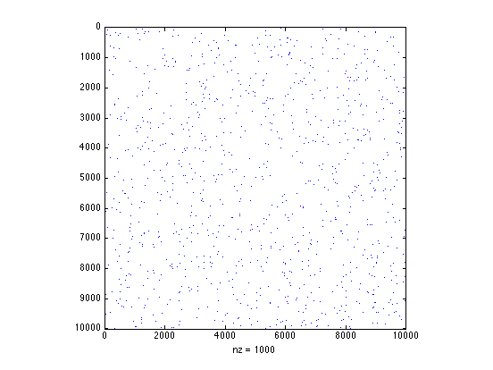

Contents
- A complete (internal) inter-point distance matrix.
- Distances may be in any number of dimensions, even 1-d.
- Or in very many dimensions.
- The default metric used to compute the distance is the 2-norm, or Euclidean norm.
- The 1-norm is also available as an option.
- The infinity norm is an option too.
- The 0-norm is not really a valid norm, but I've included it anyway.
- Inter-point distances may between two sets of points.
- You may only want some subset of the distances. The nearest neighbor is a common choice.
- You can return the result as a structure, or a 2-d array
- You can find the single largest distance.
- or the k largest distances (here, k = 3)
- Or the k smallest distances (here, k == 5)
- You can find only those distances above a specific limit.
- You can also limit the maximum distance found.
- Compute only the 1000 smallest distances between a large pair of arrays
- Nearest neighbour is quite efficient in one dimension
- ipdm uses bsxfun where that is possible.
%{ Demo for ipdm.m (Inter-Point Distance Matrix) John D'Errico e-mail: woodchips@rochester.rr.com %}
A complete (internal) inter-point distance matrix.
% Each point is taken as one row of the input, so each column is a % dimension. There will be a 5x5 array of interpoint distances between % the points in a 5x2 set of data. Note that the diagonal elements in % this matrix will be zero, since they describe the distance from a % point to itself. A = randn(5,2); d = ipdm(A)
d =
0 1.233 1.3493 1.1245 1.242
1.233 0 2.1708 2.135 1.1396
1.3493 2.1708 0 0.39941 1.2894
1.1245 2.135 0.39941 0 1.4422
1.242 1.1396 1.2894 1.4422 0
Distances may be in any number of dimensions, even 1-d.
A = rand(6,1); d = ipdm(A)
d =
0 0.85266 0.22332 0.37803 0.92072 0.03229
0.85266 0 0.62934 0.47463 0.068052 0.82038
0.22332 0.62934 0 0.15471 0.6974 0.19103
0.37803 0.47463 0.15471 0 0.54269 0.34574
0.92072 0.068052 0.6974 0.54269 0 0.88843
0.03229 0.82038 0.19103 0.34574 0.88843 0
Or in very many dimensions.
A = rand(5,1000); d = ipdm(A)
d =
0 12.479 12.882 12.559 12.855
12.479 0 12.49 12.723 12.513
12.882 12.49 0 12.666 12.515
12.559 12.723 12.666 0 12.759
12.855 12.513 12.515 12.759 0
The default metric used to compute the distance is the 2-norm, or Euclidean norm.
A = rand(3,2); d = ipdm(A)
d =
0 0.42608 0.53366
0.42608 0 0.10928
0.53366 0.10928 0
The 1-norm is also available as an option.
% The 1-norm is sometimes known as the city block norm. Of course, % the 1-norm is just the sum of absolute values, so it is the total % distance one would travel if constrained to move only along % "streets" parallel to the x and y axes. % Options are passed into ipdm using property/value pairs d = ipdm(A,'metric',1)
d =
0 0.50902 0.62075
0.50902 0 0.11173
0.62075 0.11173 0
The infinity norm is an option too.
% It is the maximum difference in any dimension. We can think % of the infinity norm as the limit of a p-norm as p --> inf d = ipdm(A,'metric',inf)
d =
0 0.41575 0.525
0.41575 0 0.10925
0.525 0.10925 0
The 0-norm is not really a valid norm, but I've included it anyway.
% Its the smallest difference in any dimension. Why is it not a valid % norm? You can have two widely distinct points with a "0-norm" of 0, % as long as they exactly match in any one dimension. You can also % look at the 0-norm as the limit of a p-norm, as p --> 0 from above. % Properties can be shortened, and capitalization is ignored. d = ipdm(A,'Met',0)
d =
0 0.093271 0.095754
0.093271 0 0.0024827
0.095754 0.0024827 0
Inter-point distances may between two sets of points.
% Of course, the diagonal elements will no longer be expected to be zero.
A = randn(10,2);
B = randn(3,2);
d = ipdm(A,B)
d =
0.46877 1.3268 1.0699
2.3371 2.6267 2.0068
0.18845 1.4021 1.4047
2.7392 1.5299 1.668
1.4282 2.1474 1.6604
0.53418 0.7202 0.7268
1.5636 0.37851 0.637
2.3509 2.9521 2.3854
2.1743 2.842 2.298
0.4548 1.6836 1.6509
You may only want some subset of the distances. The nearest neighbor is a common choice.
% Note that the result is a sparse matrix, to allow you to compute % interpoint distance matrices between very large sets of points. % When an array is returned, if that array is likely to be a sparse % one, I've chosen to generate the array in a sparse format. A = rand(7,3); B = rand(5,3); d = ipdm(A,B,'Subset','nearest')
d = (6,1) 0.51868 (2,3) 0.64675 (4,3) 0.21866 (7,4) 0.19648 (1,5) 0.81444 (3,5) 0.47079 (5,5) 0.63785
You can return the result as a structure, or a 2-d array
d = ipdm(A,B,'Subset','nearest','result','struct') % A structure as the output can sometimes be useful, if that is how you % will be using the results anyway. [d.rowindex,d.columnindex,d.distance]
d =
rowindex: [7x1 double]
columnindex: [7x1 double]
distance: [7x1 double]
ans =
1 5 0.81444
2 3 0.64675
3 5 0.47079
4 3 0.21866
5 5 0.63785
6 1 0.51868
7 4 0.19648
You can find the single largest distance.
A = randn(2000,2); B = randn(1000,2); % Logically, the result should be a sparse matrix. d = ipdm(A,B,'Subset','largestfew','limit',1)
d = (302,172) 7.2695
or the k largest distances (here, k = 3)
% find the k = 3 largest distances d = ipdm(A,B,'Subset','largestfew','limit',3)
d = (302,172) 7.2695 (484,495) 7.2272 (484,775) 7.2259
Or the k smallest distances (here, k == 5)
d = ipdm(A,B,'Subset','smallestfew','limit',5)
d = (1137,28) 0.0023937 (1862,164) 0.0022118 (405,485) 0.0025734 (1915,567) 0.0034096 (1479,809) 0.0036645
You can find only those distances above a specific limit.
A = sort(rand(7,1)); % If an array is returned, then I fill those below the limit with -inf d = ipdm(A,'Subset','Minimum','limit',0.5) % If a structure is returned, then only the pairs beyond the specified % limit are included. d = ipdm(A,'Subset','Minimum','limit',0.5,'result','struct')
d =
Columns 1 through 6
-Inf -Inf -Inf -Inf -Inf 0.71402
-Inf -Inf -Inf -Inf -Inf 0.60806
-Inf -Inf -Inf -Inf -Inf 0.5177
-Inf -Inf -Inf -Inf -Inf -Inf
-Inf -Inf -Inf -Inf -Inf -Inf
0.71402 0.60806 0.5177 -Inf -Inf -Inf
0.76805 0.66209 0.57173 -Inf -Inf -Inf
Column 7
0.76805
0.66209
0.57173
-Inf
-Inf
-Inf
-Inf
d =
rowindex: [12x1 double]
columnindex: [12x1 double]
distance: [12x1 double]
You can also limit the maximum distance found.
A = randn(10,2); B = randn(4,2); % Here the other elements are filled with +inf d = ipdm(A,B,'Subset','Max','limit',1.5,'metric',inf)
d =
Inf 0.68246 0.38584 Inf
Inf 0.57474 0.27811 Inf
Inf 0.91444 0.61782 1.3555
1.2161 1.2027 Inf 0.17722
Inf Inf Inf 0.87028
Inf 0.65096 0.35434 Inf
Inf 0.54434 0.24771 1.4889
Inf 0.53258 0.12555 Inf
Inf 0.93034 1.0672 Inf
Inf 1.3882 Inf 1.0678
Compute only the 1000 smallest distances between a large pair of arrays
When the arrays are too large, computing the entire array may not fit entirely into memory. ipdm is smart enough to break the problem up to accomplish the task anyway. In this example, the complete interpoint distance matrix would have required roughly 800 megabytes of RAM to store. This would have exceeded the RAM that I have available on this computer, yet I only wanted the 1000 smallest elements in the end.
A = rand(10000,2); B = rand(10000,2); d = ipdm(A,B,'sub','smallestfew','lim',1000,'res','a'); spy(d)
Nearest neighbour is quite efficient in one dimension
You don't want to compute the entire interpoint distance matrix, if you only need the nearest neighbors.
A = rand(100000,1); tic,d = ipdm(A,'subset','nearest','result','struct');toc d
Elapsed time is 0.476907 seconds.
d =
rowindex: [100000x1 double]
columnindex: [100000x1 double]
distance: [100000x1 double]
ipdm uses bsxfun where that is possible.
% Older releases of Matlab did not have bsxfun, so I check first to see % if this function exists. If it does exist in your release, ipdm can % run faster and be more efficient in its use of memory. % The ipdm code also attempts to use memory in an efficient way, so that % very large distance matrices are processed in chunks. I try to minimize % the creation of huge intermediate arrays when only a smaller subset of % the full distance matrix is desired. The user can control the size of % the chunks with the ChunkSize property. A = rand(5000,1); % The default ChunkSize is 2^25 tic,d = ipdm(A,'Subset','min','limit',0.99,'result','struct');toc % Here, only 1 megabyte chunks will be processed at any time. tic,d = ipdm(A,'Subset','min','limit',0.99,'result','struct','chunksize',2^20);toc
Elapsed time is 3.230474 seconds. Elapsed time is 3.332791 seconds.